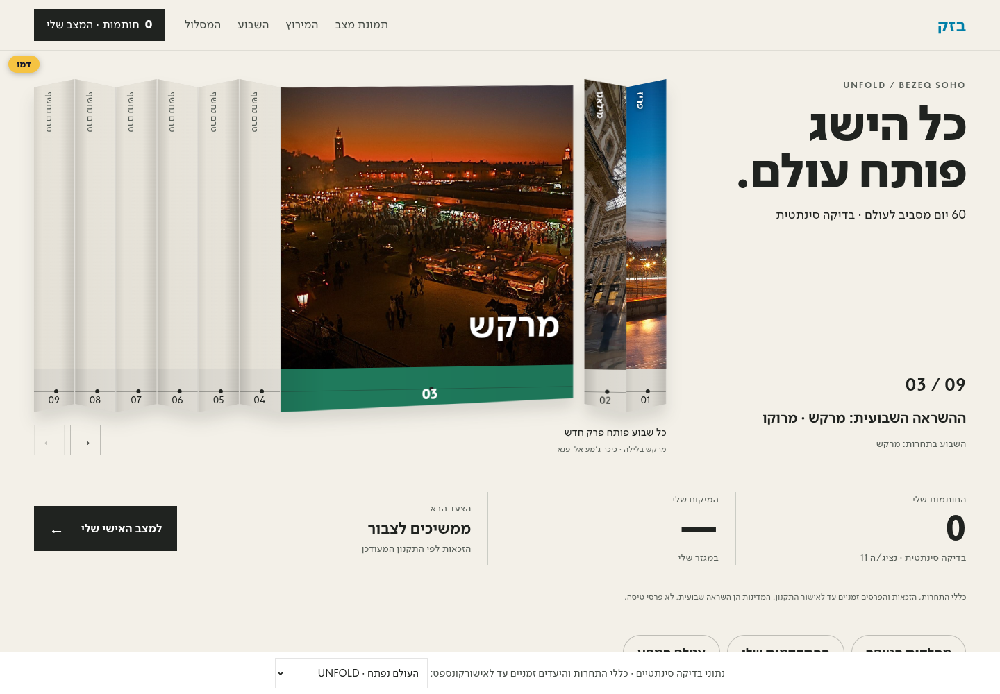
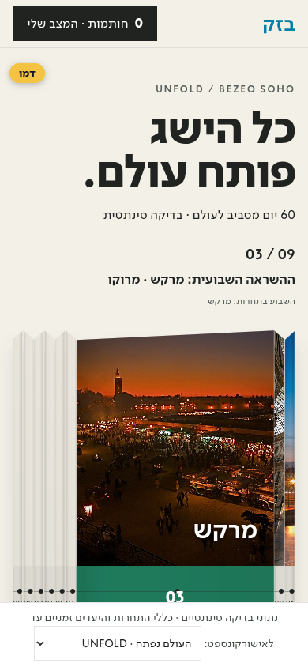
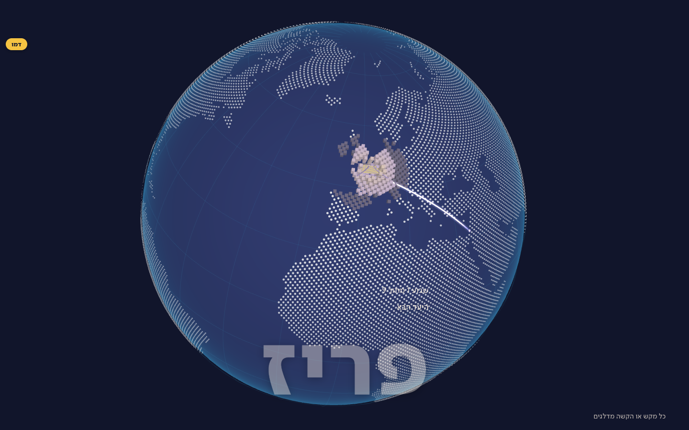
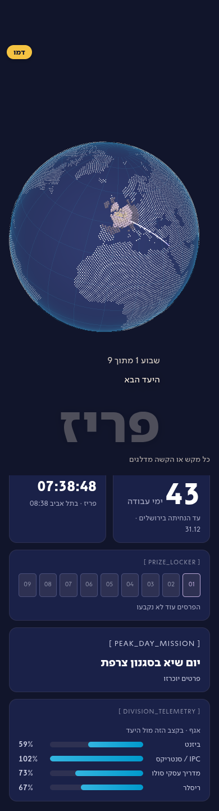
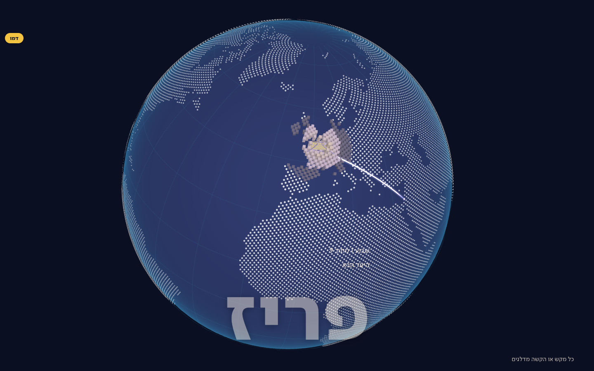
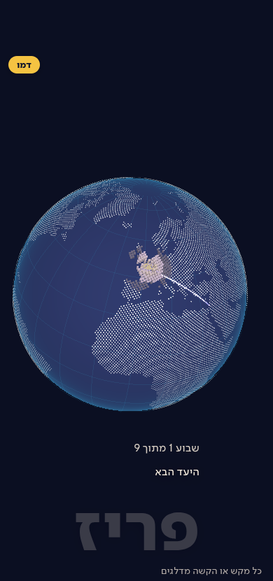

Two equal main choices, one independent experimental concept. All displayed names and results are synthetic. Contest rules and peak days remain drafts; destinations are weekly themes, not travel prizes.
Main gallery · Original41 alternatives in Archive · Revision details and limits
Each version uses the existing data-backed travel classes, personal progress and journey. The private administrator updates the participant filesystem folder; no administrator tools or employee inputs are hosted here.
The screencast is for illustration, not a hardware performance benchmark. The live page is the interactive experience.
Open the live synthetic version


Open the live synthetic version


Open the live synthetic version


The downloadable administrator package is in the private repository release, not this public gallery. Final rule/prize approval and a target Windows/OneDrive smoke test remain required.